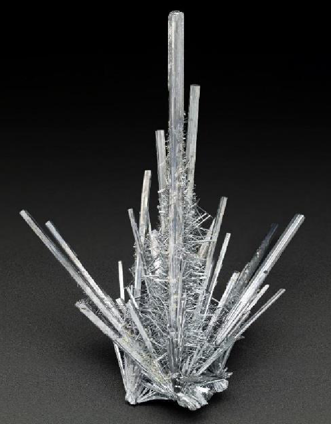

第五单元 锑与锑场¶
前面我们学习了锑能。这一章我们主要学习超理学中最重要的一种元素——锑，以及超理反应中普遍存在的锑场。
课时一 锑的主要性质¶
本课时主要介绍锑的一些基本性质。
|  | ||||||||||||||||||||||||||||||||||
主要超理学性质¶
- 催化性 锑可以催化𨭦元素的形成，即 $\rm H \to 0 + proton$。（中学阶段不做硬性要求）
- 互扰性 在锑场下，锑单质的第二锑场能会大幅上升，具体数值无法测出，预计和同离子效应有关，目前锑星科学家正在对此进行研究，所以也不要求掌握。
- 湮灭性 在高价锑场下，由于锑单质的赵氏不稳定性，锑可能产生一价赵氏状态和负一价赵氏状态。当体系内两种状态的锑的物质的量乘积超过一定数值（定义为锑的湮灭积 $\rm K_{Sb}$）时，会产生正负锑原子湮灭现象，直至体系内两种锑原子浓度达到动态平衡，反应常数 $\rm K = K_{Sb}$。
本课时内容比较重要，大家务必牢记（这幅图长什么样）。
课时二 锑场第一定律¶
锑场第一定律 在锑场中，物质的变化规律不再满足三维体系中的守恒定律，变化规律遵从锑星（十维）体系中的守恒定律。
锑场第一定律的提出，为超理学实验提供了可能性。在超理学实验中，底物和产物的关系往往不再满足狭义的质量守恒定律，狭义的能量守恒定律，狭义的电荷守恒定律和狭义的盖斯定律。例如经典的硫化硼实验，即 $\rm S + 2\,B \to (SB)_5 + 5\,Zdparticle$。其中，$\rm Zdparticle$ 指代形成魔键的赵氏粒子，之所以会失去一个硼原子是因为在十维环境中，硼原子在锑场作用下分解成 5 对赵氏粒子形成魔键，从而导致了五合硫化硼的聚合。当然，五合硫化硼不是代表其中有五个硫原子或者硼原子，而是代表硫化硼分子外部由五个魔键镶嵌而成。
对锑场第一定律的深入研究，超理学家对锑场第一定律进行了定量测量，得到锑场第一定律第一推论： $$ \rm \text{Annihilation Percentage}(\mathcal {AP}) = \sum \text{Miai Rand} \quad (0\% \sim 100\%) $$
注意的是：其中随机函数由实验者人品和赵大师的心情决定。$\rm M$ 代表待测元素的相对原子质量(或待测粒子团的相对质量)，$\rm a$ 代表待测原子或原子团质量占总粒子质量的百分数，$\mathcal {AP}$ 代表湮没百分比。
课时三 锑场的主要性质¶
1. 锑场能¶
锑场能是用来描述锑场对周边环境产生影响的能力的锑场性质，宏观表现为锑场催化超理反应的效率。
普遍认为自然界是不连续的，例如电荷的最小单元是夸克，夸克组成的质子携带了一个单位的正电荷。同理，锑场强度也是不连续的。我们定义最小的锑场能为单位锑场能，记作 $\rm S$。$\rm S$ 的单位是 kJ，代表一个赵氏粒子的电离产生的锑场的能量。单位摩尔的赵氏粒子电离产生的锑场能定义为 $\rm SN$，称为标准锑场能。根据爱因斯坦质能方程和实验测定，标准锑场能的数值约为 $\rm 9.26 \times 10^{13}\;kJ$1。
2. 锑场催化超理反应¶
不同于常规的催化反应，锑场催化机理不是降低活化能，而是提供能量。这种催化机理在三维世界来看是不可能完成的或者说十分荒谬的，但是在十维世界中确实可行，甚至是十分普遍的。也是因为锑场的这种独特的催化机理，锑场的催化没有饱和性，它的催化效率也完全取决于产生锑场的物质自身的锑场能。
我们来看非常经典的赵氏炼金术，即
$$ \rm Cu + Al \xrightarrow{\text{发功}} Au + Cl_2\uparrow $$
请注意，现今科学界大多认为这是字母的排列组合的产物，而将其定义为伪科学，其实不然。按照超理学方程式的写法，这个反应应该写成
$$ \rm 2\,Cu + 2\,Al \xlongequal{\text{强大的锑场}} 2\,Au + Cl_2\uparrow $$
从方程式我们不难看到这是一个产生很强锑场的反应，这种湮灭的比例就是在锑星也很少见——这也决定了这个反应的特殊性，即反应速度非常快。当然，也因为这种强大的反应速度产生的短期内极大的能量，导致了锑星大爆炸，伟大的锑星文明毁于一旦。
3. 不可叠加性¶
锑场不是波，不具有波粒二象性，所以也不具有波的性质，不能衍射、干涉、叠加等。锑场是一种场，类似于电场，但是它的物质性更强，它的强度、能量完全取决于产生锑场的魔键数量。也就是说，锑场完全依赖于物质的场。
4. 瞬时性¶
这是维系锑场稳定的最重要性质。锑场存在的时间很短暂，因为魔键在三维世界无法稳定存在，锑场会随着魔键的消失而逐渐消失。锑场存在的时间和魔键数量的关系至今凭借三维世界的技术和赵明毅先生的才智，我们依然很难以测出，但是我们可以看到的是，锑场存在的瞬时性是我们运用锑场完成生产生活的最大难题，当然，同时也是最大安全保障。
课时四 魔键理论¶
赵氏湮灭理论被看做是连接十维世界和三维世界的桥梁，因为爱因斯坦的存在。根据爱因斯坦的质能方程，也就是 $\rm E=mc^2$，赵明毅先生提出了魔键理论，即质子或电子的湮灭产生的巨大能量使分子或其他原子团周围形成魔键。
赵明毅先生的原文我们已经不得而知了，但是我们可以推论出来的是赵明毅先生的魔键第一定律：
在超理反应中，每两个同种属性相同单位电荷（通常是两个质子之间或两个电子之间）的粒子可能会形成湮灭，湮灭比例参考锑场第一定律第一推论，湮灭产生的能量形成锑场，物质体现是形成魔键包裹在分子或其他形式原子团周围。这就是普遍赞同的魔键理论的基础。
魔键理论带领我们进入了一个陌生但是神奇的世界，这里有超盐酸 $\rm (HCl) _ {10}$，超硫化硼 $\rm (SB) _ {10}$ 等一系列三维世界中不可想象的物质。其中我们要重点突出超盐酸。
在地球中，三大强酸是日常生活生产实践中用途最大的路易斯酸（Lewis Acid），后来发现的王水和氟锑磺酸一度被认为是世界上存在的最强的酸。赵明毅先生发现，在锑场中，十个盐酸分子会形成超盐酸，具体反应如下： $$ \rm 10\,HCl \xlongequal{\text{强大的锑场}} (HCl)_{10} $$
当然，强大的锑场有一定危险性，所以，锑星工业制取超盐酸一般在高温，高压下，使用一般锑场进行超盐酸的制取。
产生的产物，超盐酸，具有相当强的酸性，可以腐蚀硫酸钡、硝酸银等常见的不与酸反应的稳定的盐，也可以腐蚀少量饱和烷烃。由于产物不可测，具体的反应方程目前仍不得而知，但是随着科技的发展，超盐酸会在一定程度上成为生产生活的必需品。
-
标准锑场能的数值远远大于每摩尔氢气燃烧放出的热量（约为 $\rm 286\;kJ$），这也是锑场为超理反应提供能量的最重要原因。 ↩